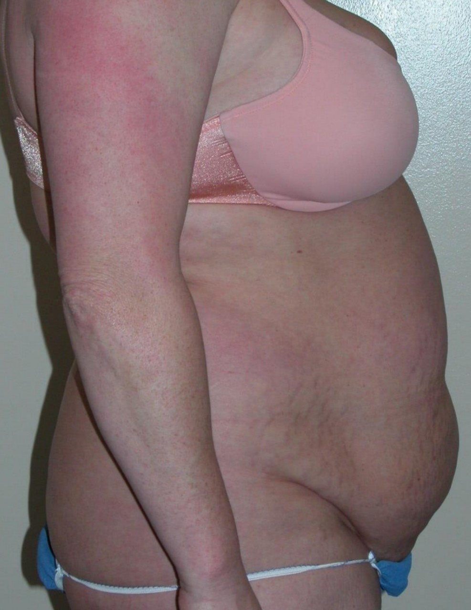
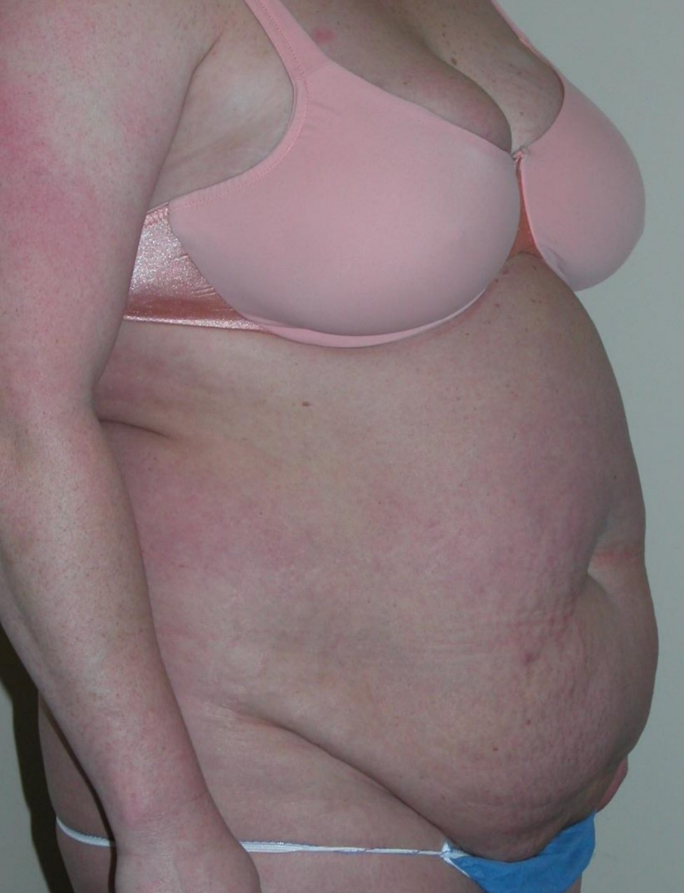
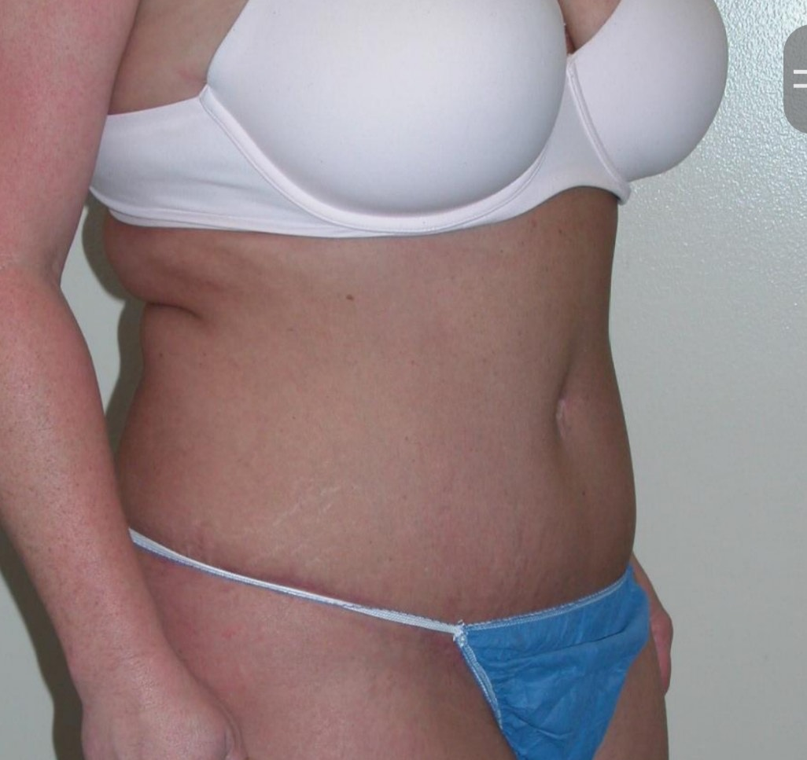
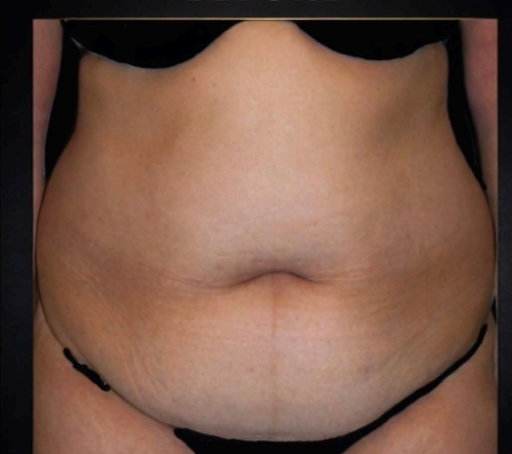
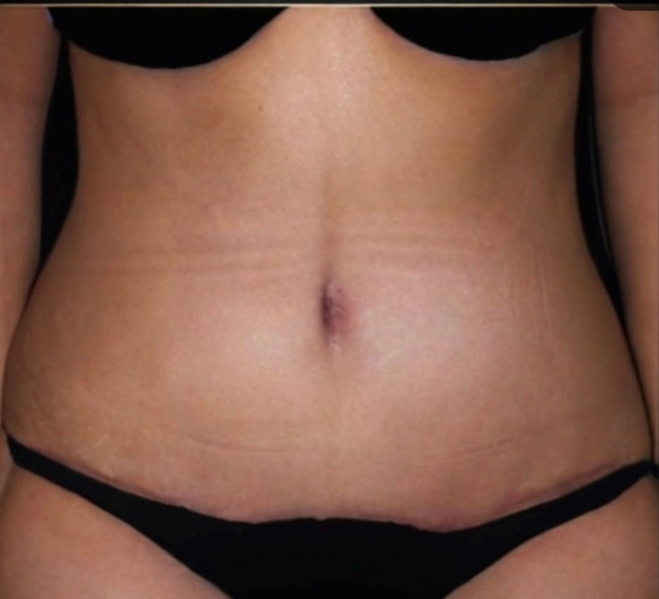
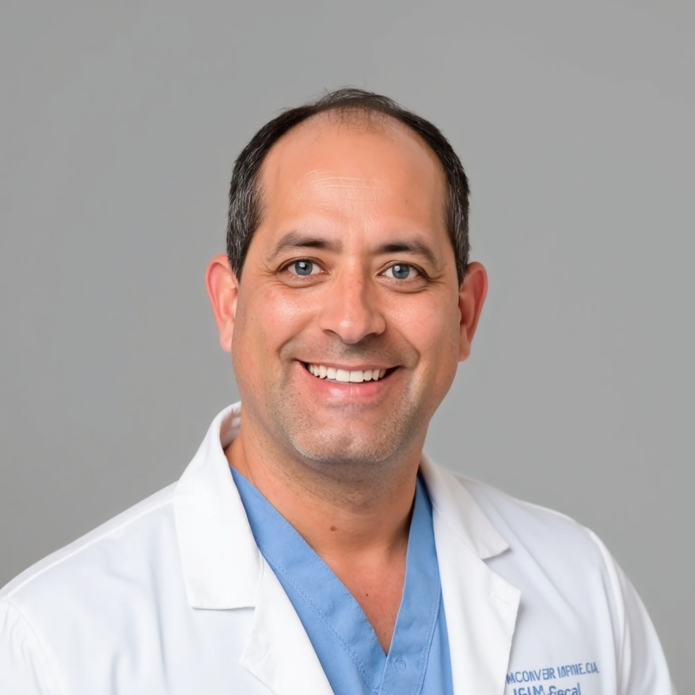

He will tell you not to have the surgery.
Robert Rodrigues spent the first part of his career rebuilding bodies after trauma and cancer. That is where the judgment comes from, and it is why patients keep writing that he talked them out of the bigger operation.
Monday to Friday, 8:00 to 5:00. Consultations by phone first.
Trained where the hard cases go.
- Carroll College
- University of Colorado Health Sciences Center
- Case Western Reserve University
- University of Michigan
- Mayo Clinic
Undergraduate, medical degree, integrated plastic surgery training, advanced fellowship. Over two decades of surgical experience.
Reconstructive first.
Where the judgment comes from
Breast reconstruction, complex wound reconstruction, advanced hand and wrist surgery. Those operations carry greater surgical complexity and demand a deep understanding of anatomy, tissue healing and precision.
Why it matters for revisions
Where a previous procedure has altered anatomy or created a problem, a reconstructive perspective is often what makes it possible to restore balance and natural form.
Science and art, together
A childhood spent drawing, painting and sculpting sat alongside a pull toward physics, chemistry and biology. Plastic surgery is one of the few specialties that asks for both at once.
Procedures
- BodyBrazilian butt lift. Tummy tuck, removing excess skin and fat and tightening abdominal muscles. Liposuction.
- BreastBreast augmentation, augmentation mastopexy, inverted nipple repair.
- Face and neckFacelift and neck. Rhinoplasty. Blepharoplasty, upper and lower.
- SkinMorpheus8 skin tightening.
Individual results vary. The photographs above are of actual patients of this practice and are not a prediction of any individual outcome.
What patients write.
“He didn't push toward one option or the other. He even discouraged me from the procedure that would have made him more money. It wasn't the right thing for me.”
“He never pressured me into choosing a more expensive option and genuinely cared about what was right for me.”
“I'm 6 weeks post op from an extended tummy tuck and breast augmentation and I am loving my results! He listened to what I wanted and the results I wanted to achieve.”
“Very knowledgeable and took time to listen to me as well as explain procedures and set realistic expectations. He is an excellent surgeon.”
“Very great bedside manners, makes you feel safe and he listened to my concerns. I have referred him 3 times and will continue to refer him.”
Start with a phone call.
There is no booking form and no online scheduler. The practice answers its own phone during clinic hours.
- Address
- 10382 S. Jordan Gateway, Suite 100
South Jordan, UT 84095 - Phone
- 801 810 0761
- info@utah-aesthetic-surgery.com
- Hours
- Monday to Friday, 8:00 AM to 5:00 PM
Saturday and Sunday, closed